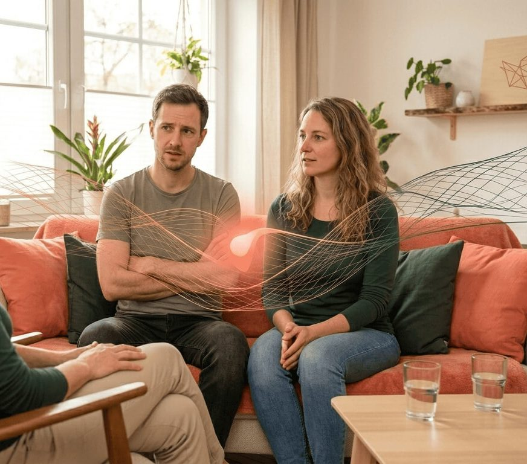

Womit ich dir helfe
Meine Angebote
Individuelle Begleitung, in Präsenz in Düsseldorf oder online, ganz wie es für dich passt.
Angst- & Paniktherapie
Panikattacken, Herzrasen, das Gefühl, die Kontrolle zu verlieren, Angst kann das Leben eng machen. Wir lösen die zugrunde liegende Fehlschaltung im Nervensystem, damit du wieder ruhig, frei und sicher durch deinen Alltag gehst.
Mehr zur Angsttherapie in Düsseldorf →
Termin anfragenPaartherapie
Wenn Nähe zu Distanz wird und dieselben Streitmuster sich wiederholen: Ich begleite euch dabei, einander wieder wirklich zu hören, Vertrauen aufzubauen und echte Verbindung zu leben, ohne Schuldzuweisungen.
Mehr zur Paartherapie in Düsseldorf →
Termin anfragen
Narzissmus-Recovery
Nach einer toxischen Beziehung bleibt oft mehr als Trauer: eine Traumabindung, die schwer loszulassen ist. Wir lösen diese Bindung Schritt für Schritt, stärken deinen Selbstwert und bringen dich zurück zu deiner eigenen Kraft.
Termin anfragen
Selbstwert & innere Stärke
Selbstzweifel sind erlernt, und lassen sich verlernen. Gemeinsam bauen wir ein stabiles Selbstwertgefühl und innere Sicherheit auf, die du nicht nur denkst, sondern spürst.
Termin anfragenKlinische Hypnose
Als ergänzende Methode nutze ich klinische Hypnose, um tiefsitzende Muster sanft zu erreichen und zu verändern, in einem sicheren, klar geführten Rahmen.
Termin anfragenDer erste Schritt ist ein Gespräch
Ein kostenloses, telefonisches Kennenlernen (ca. 15 Minuten), unverbindlich und offen.
Kennenlern-Gespräch anfragen